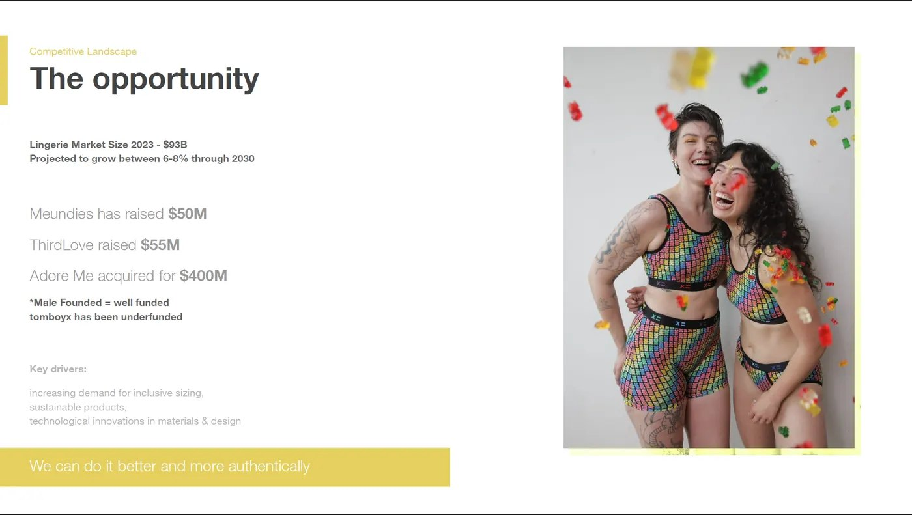

How do you tell one story to four different rooms?
The early investors
came for the people.

Only they saw the company's own words, this large.
The values-driven investors
came for the world they want.

Only they saw people pictured the way they would want to be seen.
The angels who have run companies
came for the engine.

Only they saw four numbers, each beside the one it beats.
The syndicates
came for what is exceptional.

Only they saw the invitations to customers' weddings.
Four rooms. One company.Not one fact changed between them.